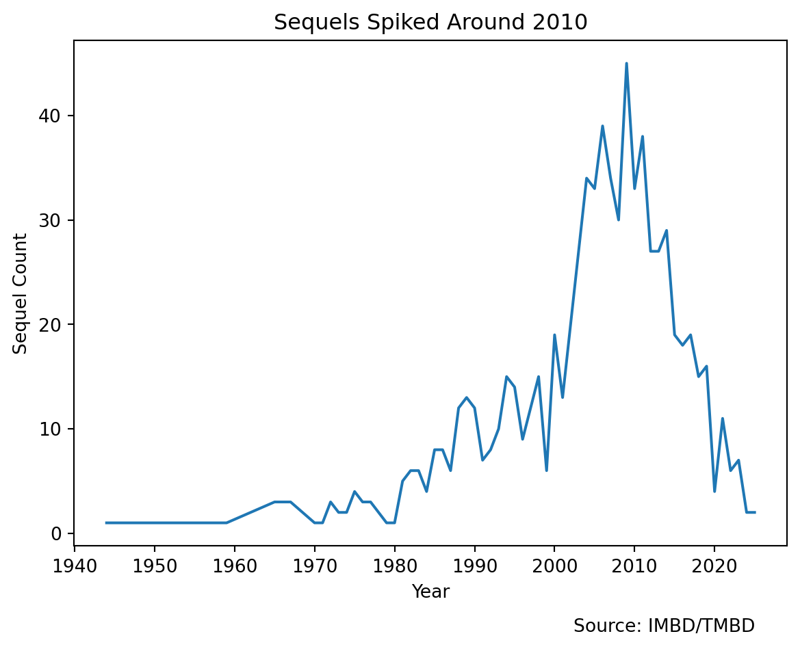
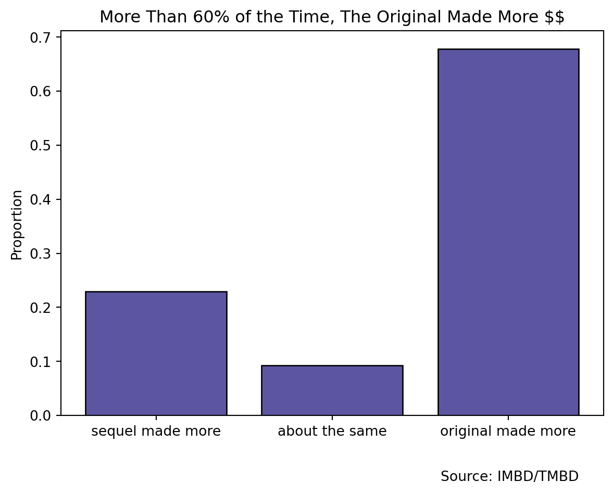
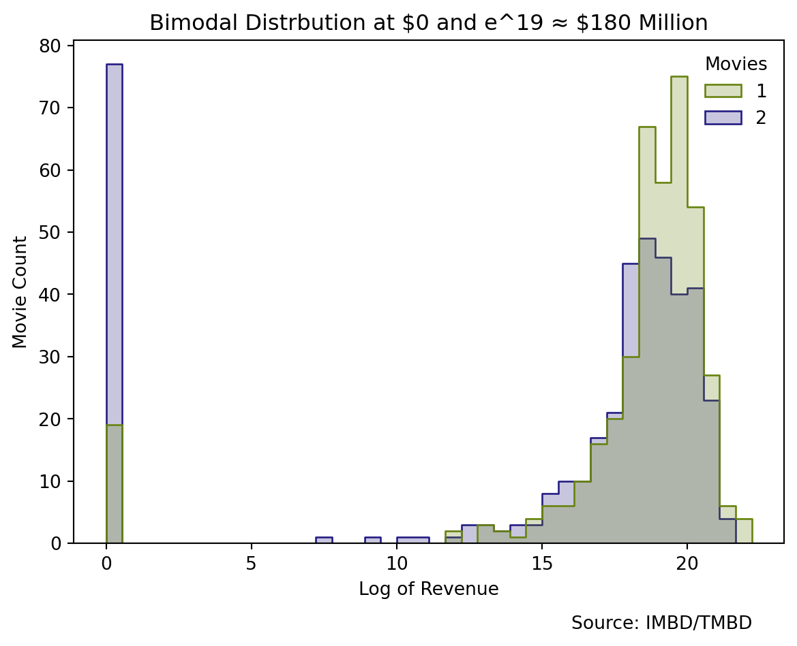
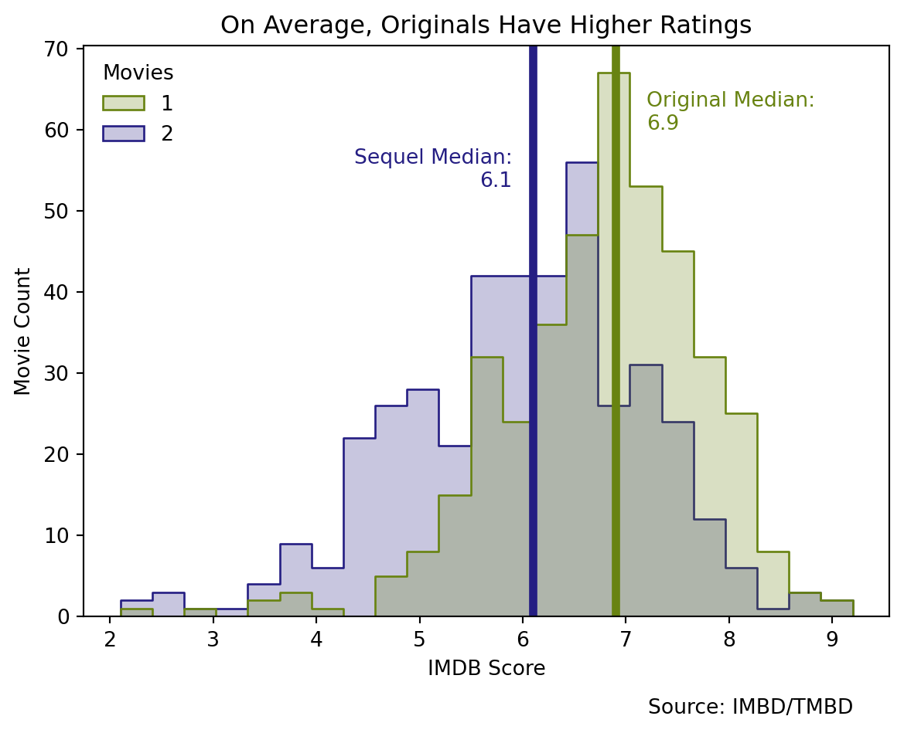
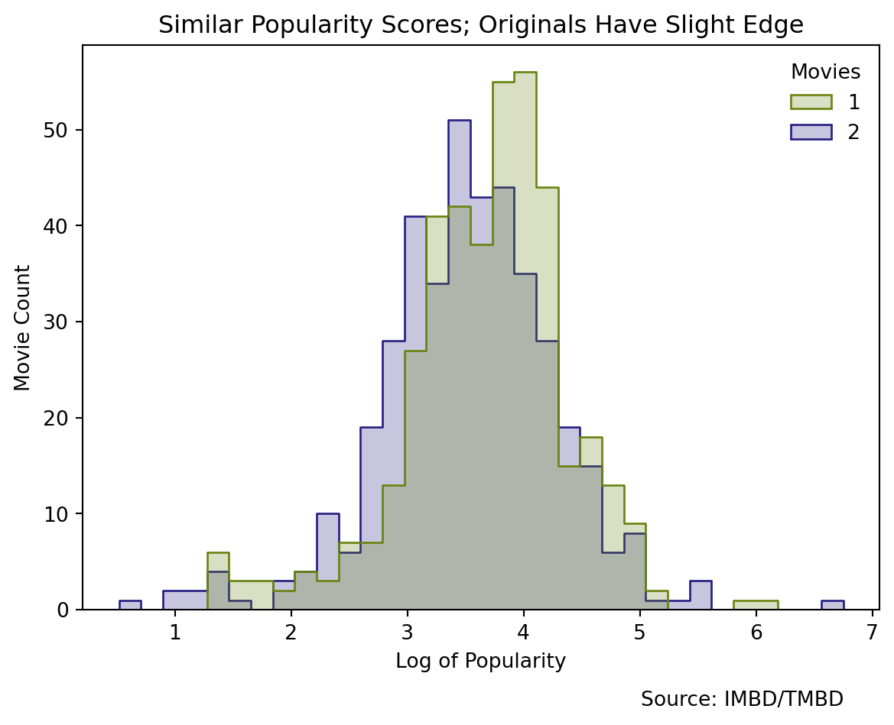

How Successful Are Movie Sequels?
Python
Data Journalism

Introduction
I’ve wanted to do this post for a while now. When I was younger, it seemed movies were more of a one-off thing. Now, it feels like almost every movie has a sequel and sometimes many more. Lets look at some data to see what’s going on here. For this analysis, I write down a series of questions and answer them one-by-one. Scroll down to see the questions ⬇️
Previous Studies
I started this analysis by looking at what others had done with movie sequels. I found loads of data movie analyses, but few about movie sequels. Here are a few of the links I found:
- I found a kaggle project looking at this question, and I followed a similar data preparation process (without using French Wikipedia). He looks at one question (Are movie sequels less quality) whereas I look across a series of questions.
- This one give a good overview of some of the assumptions that go into this type of analysis. For example, “how is a series defined?” and “What do we do with series that have changed significantly over time?”
- This one looks interesting, but several of the figures wouldn’t render on my device which referenced the company silk.co. I am skeptical that this website/company still exists.
Data
For the data, I used a list created on IMDB containing around 1200 movies and sequels. It is not an exhaustive list, but it covers a lot of ground. Unfortunately, this list was missing a few things I wanted such as the movie’s revenue, budget, language, production company, and other variables. I joined these in via the TMBD API. The data is available for download on the link to the side.
In the first chart, I also join in a non-commercial dataset from IMDB which can be accessed here.
Warning
The data from TMDB is community based - meaning people self-report the revenue and some of the other data. Unfortunately, this means that there may be errors at times in the data. There are state-of-the-art data and APIs available, but only through paywalls and I’m not paying 😂
Questions
Are There More Sequels Over Time?
Warning
Upon manual inspection of the data, I noticed that the list did not include a lot of movie sequels after 2010 eventhough some exist. For example, my data includes the first 5 Tinker Bell Movies up until 2012, but does not include movies 6-8. Yes, there are 8 Tinker Bell movies😂. So, I would interpret the decrease in sequels after 2012 with caution.
Main Takeaway: It seems there was a spike in sequels after the year 2000. And, the spike in sequels may have come a little bit before the spike in movies, but, generally, sequel production has followed the movie production trend overall and increased over time.
Do Sequels Make More Than The Original?
Note
I noticed that several movie revenues were missing, so I went through each missing value and looked up the revenue here which is the recommended resource for TMDB contributors (read more in the TMDB Bible). Originally, there were some significant movies that showed $0 such as Avatar (the blue people version), one of the best performing films ever. I added in all the latest numbers in the data that can be downloaded on the right.
These number are inflation adjusted using the CPI.
Below, I define “About the same” when the revenue of the sequel is the same as the original within a 10% margin (+/- 5%)

Looking at a simple crosstab breakout above, we see that the original movie is likely to make more money than the sequel more than 60% of the time.

However, if you look at the distributions between the original and the sequel, they look quite similar. There is an exception though: sequels are much more likely to make zero dollars.
Main Takeaway: More than 60% of the time, the original outperforms the sequel. If the sequel makes revenue, the sequel may perform similarly to the original in revenue.
Are Sequels Rated Higher Than The Original?

The IMDB distributions for these are fairly gaussian bell-curve looking. As you can see, the Original is on average rated higher with a median rating of 6.9 whereas the sequel is on averate rated lower with a median of 6.1.
We are just looking at the overall distributions here, but we can calculate the actual average difference in score which I do below.
def imdb_diff(data_part):
tmp = data_part.sort_values("sequel_num").reset_index(drop=True)
return tmp.loc[0,"IMDb Rating"] - tmp.loc[1,"IMDb Rating"]
diff = data.query("sequel_num in [1,2]") \
.groupby("sequel_group") \
.apply(imdb_diff) \
.mean()
diff = round(diff,2)
print(f"On average, the original is rated {diff} points higher than its sequel")On average, the original is rated 0.77 points higher than its sequelAre Sequels More Popular Than The Original?

Discuss Popularity Score. On TMDB. link is here.
Do Sequels Typically Recieve Less Budget?
Note
These number are inflation adjusted using the CPI.
Takeaway: Lower numbers of sequels are more common (you can see the N-size decrease as the sequel number increases), but the trend is clear; sequels on average recieve a higher budget.
Which are the most popular production companies for making sequels?
What Predicts The Success of Films (Revenue, IMDB)?
FEATURE: How Does Time Between a Film and Its Sequel Affect Its Success?
FEATURE: More Budget Bettr Movie?
FEAUTRE: Are Sequels Who Keep The Same Director More Or Less Successful?
Questions for Future Study
Perhaps look into collections